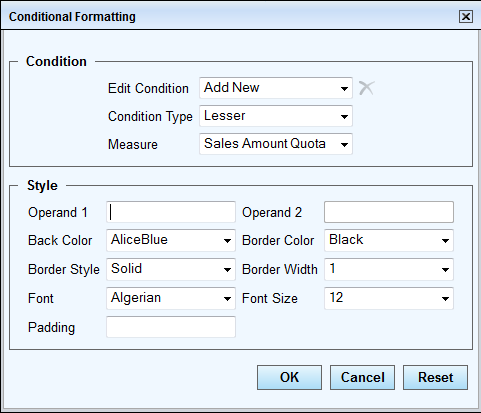
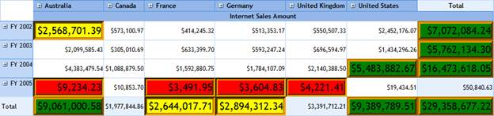

Conditional formatting can also be done through the OLAP grid’s toolbar dialog. The toolbar holds different conditional options to format the OlapGrid control.
Different types of conditional formatting
Conditional formatting can be applied for the following condition types:
· Lesser
· Greater
· Equal
· Not equal
· Between
· Not between
The properties that can be formatted for value and summary cells are as follows:
· Back color
· Border color
· Border style
· Border width
· Font family
· Font size
· Padding
Conditional Formatting Dialog
The Conditional Formatting dialog provides options to customize the appearance of the grid based on certain conditions. Formatting will be applied based on the selected measure.

Figure 25: Conditional Formatting Dialog
Edit Condition: Contains a list of formatting conditions applied to the grid. It has a number of conditions applied starting from Format 0 to Format n.
Measure: Contains a list of measures present in the grid.
Remove: Used to remove the selected condition along with the formatting from the Grid.
Operand 1: Grid will be formatted based on the operand value entered.
Operand 2: Required if the Condition Type is set to Between or Not between.
Back Color: Sets the background color of a cell.
Border Color: Sets the border color of a cell.
Border Style: Sets the cell border style to one of the following:
· Dashed
· Dotted
· Double
· Groove
· Inset
· Outset
· Ridge
· Solid
Border Width: Sets the border width of a cell.
Font: Changes the font family of a cell.
Font Size: Changes the font size of a cell.
Padding: Sets the cell padding.

Figure 26: OLAP Grid with Conditional Formatting Applied
The grid above is formatted with the following three conditions:
· Value < 10000 is marked red.
· Value > 2500000 and Value < 3000000 are marked yellow.
· Value > 5000000 is marked green.
The OLAP grid toolbar showcases the conditional formatting feature. The toolbar can be set by the following property of the OLAP Grid:
|
[C#] |
|
this.OlapGrid1.ShowToolBar = true; |
|
[VB] |
|
Me.OlapGrid1.ShowToolBar = True; |
The Conditional Formatting dialog can be launched by
clicking the Apply Formatting icon  on the grid
toolbar.
on the grid
toolbar.
Sample Link
A sample demo is available at the following link:
..\Syncfusion\EssentialStudio\<VersionNumber>\BI\Web\OlapGrid.Web\Samples\3.5\Appearance\OlapGrid ToolBar Demo